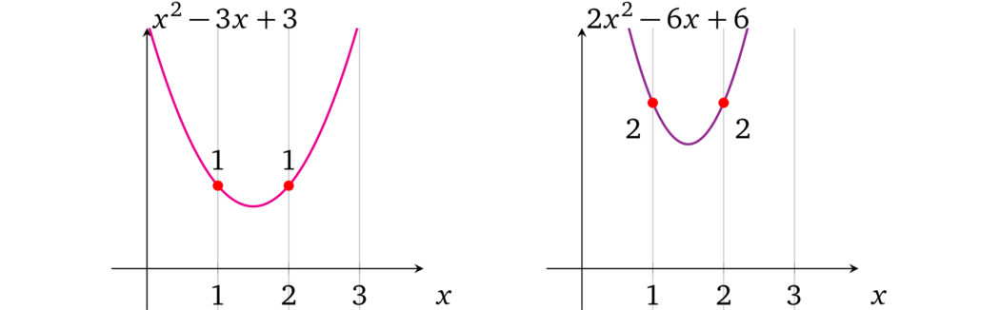

单变量操作数多项式
我们来看一个简单的例子（与当前示例一样），在由左操作数多项式 \(l(x)\) 表示的所有左操作数中仅使用一个变量（例如 \(a\)）。我们要找出是否可以确保这个多项式在每个运算中都表示相同的 \(a\) 值。证明者可以设置不同值的原因是他可以控制 \(x\) 的每次幂的每个系数。因此，如果这些系数是固定的，这个可变性问题就被解决了。
让我们仔细观察包含相等值的多项式。例如，分别检查两个表示两个运算相等值的多项式（即，在 \(x = 1\) 和 \(x = 2\) 处），其中第一个多项式包含值 \(1\)，第二个包含值 \(2\)：

注意到相应的系数在每个多项式中是成比例的，也就是说第二个多项式中的系数是第一个的两倍，即：
$$2x^2 - 6x + 6 = 2 \times (x^2 - 3x + 3)$$
当我们想要同时改变多项式中的所有值时，我们需要改变它的比例，由于多项式的算术特性，如果我们将多项式乘以一个数字，每个可能的 \(x\) 的求值也将乘以这个数字（即按比例缩放）。要验证这一点，可以尝试将第一个多项式乘以 3 或任何其他数字。
因此，如果验证者需要强制证明者在所有运算中设置相同的值，那么应该限制证明者只能修改比例而不是单个系数。
那么如何保持系数比例呢？我们可以从考虑为左操作数多项式提供了什么作为证明开始。它是在某个秘密 \(s\) 处对 \(l(x)\) 的加密求值：\(g^{l(s)}\)，也就是说它是一个加密数字。从 3.4 节中我们已经知道如何通过 \(\alpha\)-移位来限制验证者仅使用提供的 \(s\) 的指数，因此同态乘法是唯一可用的运算。
与限制单个指数类似，验证者可以一次限制整个多项式。不提供单独的加密值 \(g^{s^1}, g^{s^2}, \ldots, g^{s^d}\) 和它们的 \(\alpha\)-移位 \(g^{\alpha s^1}, g^{\alpha s^2}, \ldots, g^{\alpha s^d}\)，协议的过程就是：
- 设置
- 用对应的系数构造相应的操作数多项式 \(l(x)\)
- 选择随机值 \(\alpha\) 和 \(s\)
- 用加密的 \(l(s)\) 生成证明密钥，它是「移位」对：\(\left( g^{l(s)}, g^{\alpha l(s)} \right)\)
- 生成验证密钥：\(\left( g^\alpha \right)\)
- 证明
- 对于操作数的值 \(v\)
- 乘以操作数多项式：\(\left( g^{l(s)} \right)^v\)
- 乘以移位的操作数多项式：\(\left( g^{\alpha l(s)} \right)^v\)
- 提供操作数多项式的乘法证明：\(\left( g^{v, l(s)}, g^{v, \alpha l(s)} \right)\)
- 对于操作数的值 \(v\)
- 验证
- 将证明解析为 \(\left( g^{l}, g^{l'} \right)\)
- 验证比例：\(e\left( g^{l'}, g \right) = e\left( g^{l}, g^\alpha \right)\)
证明者需要以相同的 \(\alpha\)-移位进行响应，由于他无法从证明密钥中恢复出 \(\alpha\)，所以保持该移位的唯一方法就是用相同的值乘以加密值 \(g^{l(s)}\) 和 \(g^{\alpha l(s)}\)。这样一来证明者就不能修改 \(l(x)\) 的单个系数，例如，如果 \(l(x) = ax^2 + bx + c\)，他只能一次将整个多项式乘以某个值 \(v\)：\(v(ax^2 + bx + c)= vax^2 + vbx + vc\)。由于配对，不能与另一个多项式相乘，并且 \(s\) 的各个指数的 \(\alpha\)-移位也会不可用。证明者既不能加也不能减，因为 \(g^{\alpha(l(x) + a'x^2 + c')} \neq g^{\alpha l(x)} \cdot g^{a' x^2} \cdot g^{c'}\)（这同样需要未加密的 \(\alpha\) 的知识）。
我们现在有了协议，但应该如何构造操作数多项式 \(l(x)\) 呢？由于任何整数都可以通过乘以 \(1\) 得到它本身，因此对于每个相应的运算，多项式的计算结果都应为 \(1\)，例如：
这允许证明者分配 \(a\) 的值：
备注 4.1 由于验证密钥包含 \(g^\alpha\)，因此可以对多项式添加（或减去）任意值 \(v'\)，即：
$$g^{v l(s)} \cdot g^{v'} = g^{v l(s) + v'}$$
$$g^{\alpha v l(s)} \cdot \left(g^{\alpha}\right)^{v'} = g^{\alpha (v l(s) + v')}$$
$$e\left( g^{\alpha (v l(s) + v')}, g \right) = e\left( g^{v l(s) + v'}, g^\alpha \right)$$
因此，可以修改多项式使其超出验证者的预期并证明一个不同的陈述。我们将在 4.9.3 节中解决这个问题。
译者注：这一节解决的问题是，算术电路中一个 Input Wire 或 Output Wire 可能会同时作为多个门的输入 Wire，如何才能确保约束这些公用 Wire。
由于要证明的数学表达式是公开的，那么各个算式之间的约束关系也就是公开的，我们就可以把构造多项式的工作交给设置环节，这样证明者只需要填上对应的数值就可以了。
上文的方法限制了在同一个操作数多项式上，不同的算式中使用同一个值时的约束关系。同样，如果一个操作数多项式中用到了多个值，也可以将这些值全部加起来，下面将会介绍。